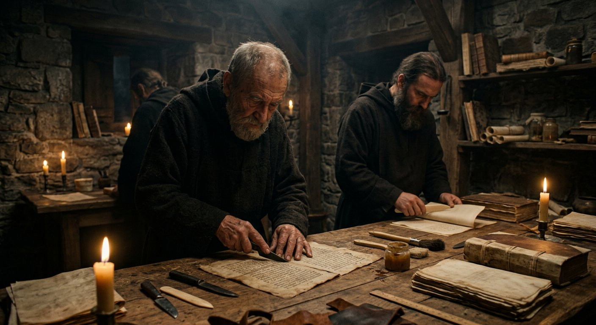
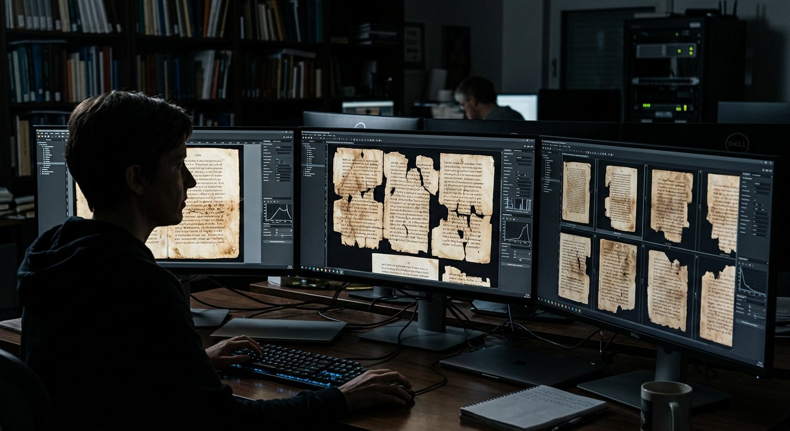

Codex H — les 42 pages perdues
Le 24 avril 2026, l'Université de Glasgow annonce l'impossible : la reconstitution de 42 pages d'un manuscrit du VIe siècle que le monde croyait détruites depuis le Moyen Âge. Des « textes fantômes » lus par imagerie multispectrale.
Un codex démantelé, des pages dispersées
Au VIe siècle de notre ère, un scribe copie les Lettres de l'apôtre Paul en grec sur de belles peaux de vélin : le Codex H, l'un des témoins les plus importants du texte paulinien. Le manuscrit traverse les siècles jusqu'au monastère de la Grande Laure, sur le mont Athos.
Là, entre le Xe et le XIIIe siècle, le parchemin devient rare et coûteux. Les moines prennent une décision pratique — courante au Moyen Âge : ils démantèlent le codex. Ses pages sont découpées, ré-encriées d'un nouveau texte, et réutilisées comme matériel de reliure et feuillets de garde pour d'autres livres. Les fragments se dispersent alors dans les bibliothèques d'Europe : Italie, Grèce, Russie, Ukraine, France.

Reconstitution : au Mont Athos, les pages du Codex H sont découpées et réutilisées en reliure — pratique médiévale du recyclage du parchemin.

Une reliure médiévale ouverte : les feuillets de garde cachent des pages d'anciens codex.
Comment lire une encre invisible
Quatre étapes, du parchemin médiéval à la restitution numérique. Cliquez sur chaque étape.
Avant / après — le texte fantôme révélé
À gauche, la page telle que l'œil la voit. À droite, la même page traitée : les empreintes chimiques laissées par le ré-encrement apparaissent — le texte fantôme du VIe siècle, parfois sur plusieurs feuillets de profondeur.
L'équipe image chaque page sous de multiples longueurs d'onde — de l'ultraviolet à l'infrarouge — en partenariat avec l'Early Manuscripts Electronic Library.
Ce que révèlent les 42 pages
1. Les plus anciennes listes de chapitres connues. Les pages révèlent l'appareil eutalien, un système d'orientation des lecteurs qui organise les Lettres de Paul de manière très différente de nos découpages actuels : comment les premiers chrétiens naviguaient dans leurs Écritures.
2. Les scribes à l'œuvre. Corrections, annotations, hésitations de la main du VIe siècle : le manuscrit devient vivant, et le travail de copie s'observe de l'intérieur.
3. La vie des livres. L'état physique du codex documente les pratiques de fabrication, de lecture et de recyclage des livres une fois endommagés — une histoire matérielle du texte sacré, jusqu'alors inconnue à ce point.

La reconstruction numérique redonne au Codex H dispersé son unité perdue — édition digitale libre : codexh.arts.gla.ac.uk.
Étant donné que le Codex H est un témoin si important pour notre compréhension des Écritures chrétiennes, la découverte de nouvelles preuves — et a fortiori d'une telle quantité — de son apparence originale est tout simplement monumentale.Pr. Garrick Allen, professeur de théologie et d'exégèse biblique — Université de Glasgow (déclarations publiques, communiqué du 24 avril 2026)
Les pages fantômes — et la voix de la découverte
Cinq pays, un seul codex
Les fragments physiques du Codex H dorment aujourd'hui dans les bibliothèques de cinq pays. La reconstruction numérique leur rend enfin leur unité.
Le mont Athos, Grèce — où le Codex H fut démembré entre le Xe et le XIIIe siècle, et d'où repart aujourd'hui sa résurrection.
Le Codex H est un livre de Paul. Le musée consacre un dossier entier aux lettres les plus lues de l'histoire.
Le Dossier Paul →